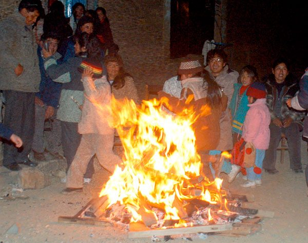
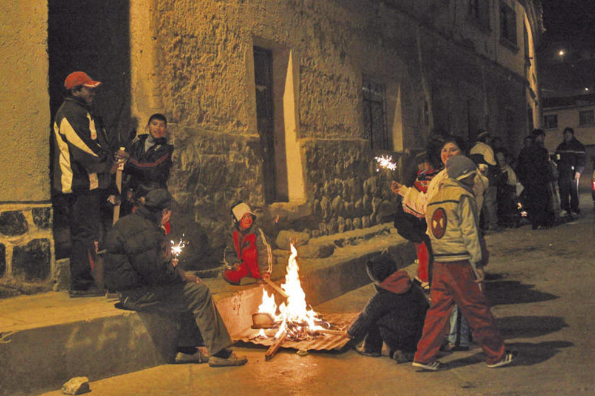
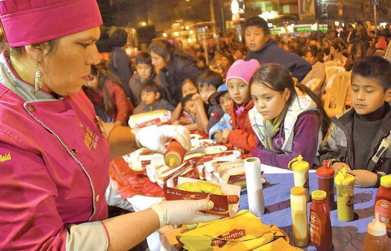
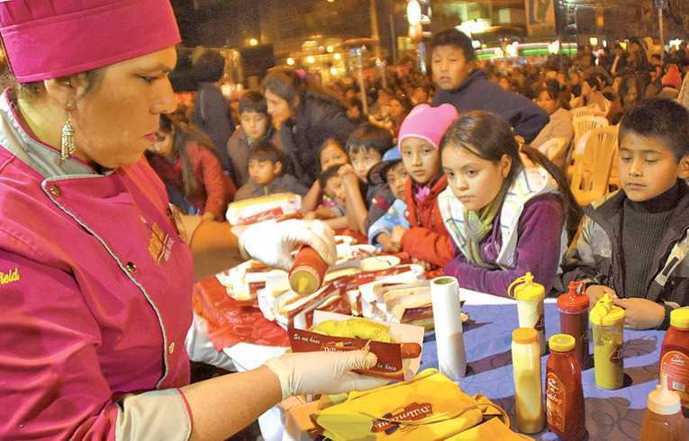

La tradicional “fiesta de San Juan”, ahora reducida a una “clandestina” fogata, con cohetillos, hot dogs y ponches, fue antaño un verdadero acontecimiento lleno de creencias y supersticiones.
Antiguamente en los poblados españoles más importantes las fogatas de San Juan se las encendía en la noche de la víspera del 24 de junio en la plaza de la iglesia principal.
Transportada la tradición a nuestra América, en la ciudad de La Paz durante los primeros años de la República se estilaba quemar un árbol entero, del cual se colgaba un saco “lleno de gatos” condenados a perecer en las llamas y cuyos desesperados gritos estaban destinados a espantar a los malos espíritus, esta costumbre fue posteriormente prohibida por su crueldad.
Antiguamente la fogata no constituía la única manifestación característica de la fiesta, lo verdaderamente tradicional era la “cruz” que la gente hacía bendecir en las iglesias en la mañana del 24 de junio. Fabricada con hierbas aromáticas y medicinales, esta “Cruz de San Juan” era colocada en el dintel de la puerta principal de las casas.
De España llegó el uso de los cohetillos y petardos, y la fiesta bailable, más conocida como “Verbena de San Juan”, fue celebrada desde “siempre” por el frío tan intenso que los “chucutas” sufrimos la noche del 23 de junio, noche conocida también como “la más fría del año”. Esta tradición tan paceñisima fue adoptada como costumbre netamente de la ciudad del Illimani.
Aunque parezca increíble, antiguamente en San Juan se jugaba con agua, recordando a San Juan Bautista, quien fue el primero que bautizó con ese líquido. Era una especie de carnaval en las calles, los jóvenes y niños se divertían mojándose y cantando: “yo te bautizo con agua de chorizo, para que no seas liso”.
Al calor de las fogatas, nunca faltaron los buenos “ponches de guinda con clavo y canela”, los más refinados hasta tenían nuez moscada, preparados con pisco de Moquegua, los “ponches” de canela, los deliciosos “sucumbes y los té con tés.
San Juan fue también una “buena noche para el galanteo”, al crepitar de los leños se intercambiaba miradas y “caramelos de amor”. Estos dulces traían en su envoltura mensajes amorosos: “Te quiero”, “Dame una respuesta”, “Que no sepa tu papá”. Otros llevaban inscritos pequeñas estrofas de versos.
Cuentan los abuelos que en las “noches de San Juan” de La Paz antigua, la que extrañamos todos, los niños avivaban las fogatas, los jovencitos y gualaychos saltaban por el fuego y se hacía competencias, no faltaba el baile ni el canto.Muchos animaban con guitarras y acordeones y en todo el barrio se hacía una enorme cadena de amistad y armonía. Ya pasadas las horas, al rayar el alba en ese frío intenso, como en medio de nubes de humo dicen, aparecían los “llaucheros” con ponchos, chalinas y lluchus con largas orejas. Encima de este gorro un rodete hecho de tiras de trapos, para sostener sus cajones especiales, los cuales mantenían brasas ardiendo para mantener calientes las sabrosas llauchas que todos compraban, no sin antes comprobar la cantidad de queso que éstas tenían en su caldoso contenido.
Al día siguiente de esta hermosa celebración, el cielo paceño se presentaba oscuro y opacado por el humo de todas las fogatas, la ciudad tenía un aspecto tétrico y lúgubre. La luz del sol, eclipsada por una neblina rojiza, hacía que el día se prepare para augurios, presagios y amuletos.
  
